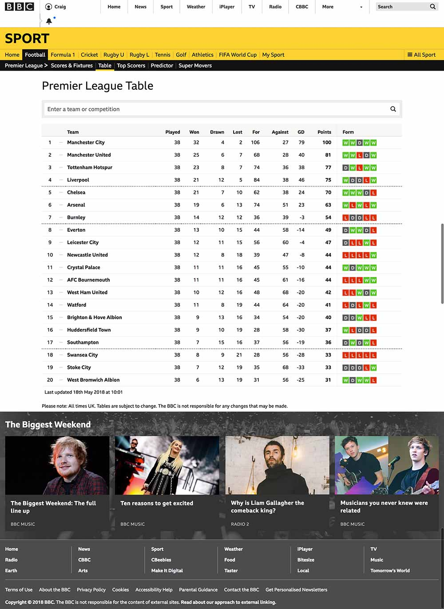
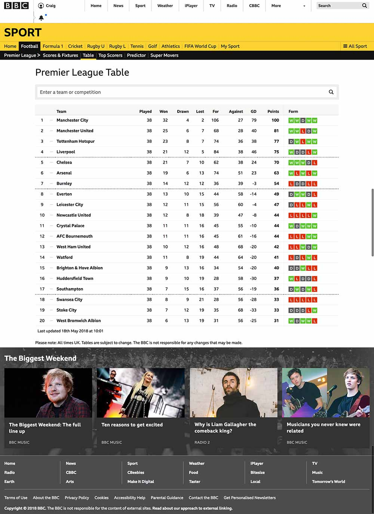

The website was BBC Sport.
It has now been updated so each coloured square contains a W for a win, an L for a loss and a D for a draw.
End of slide. Go to next slide
It has now been updated so each coloured square contains a W for a win, an L for a loss and a D for a draw.
End of slide. Go to next slide